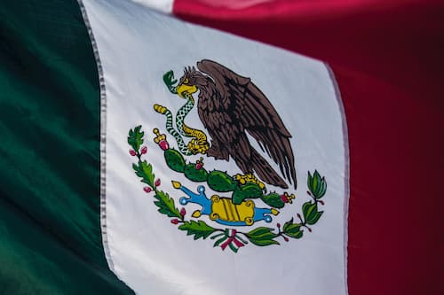

About Me
 My name is Merari, I was born in B.C., Mexico, and grew up in Utah, EU, where I currently reside. I work as a Barber at a Hair Salon in SLC, UT.
My hobbies include practicing my game code skills, and also learning and practicing how to play guitar. I'm a mom of 3 boys, named Kingston, Gavin and Maddox.
My name is Merari, I was born in B.C., Mexico, and grew up in Utah, EU, where I currently reside. I work as a Barber at a Hair Salon in SLC, UT.
My hobbies include practicing my game code skills, and also learning and practicing how to play guitar. I'm a mom of 3 boys, named Kingston, Gavin and Maddox.

Baja California, MexicoSome facts about the state of Baja California, which is located in the north east of Mexico, are:
The peninsula of Baja California is approximately 1,300 kilometers (800 miles) long, making it the third-longest peninsula in the world.
It is also known for its beautiful beaches, wine country, and outdoor activities, attracting many tourists each year.
The state's coat of arms features the motto, “Work and social justice,” along with an image of the sun representing the state’s energy.
The region was originally settled by Indigenous groups, and agriculture was practiced in the floodplain of the lower Colorado River by the Cocopa and Quechan tribes.